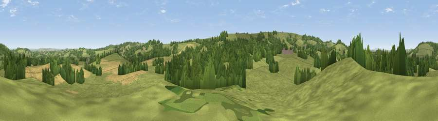

Viewpoint near Corscombe
#23845 in England · top 54% of its area beats it · near CorscombeWhere it is
The exact computed spot (ST 52125 06225). Click the marker for map links.
The view, rendered

A 360° render of this exact spot computed from the terrain model, tree cover and land cover — summer colours, afternoon light, calibrated against photographs of famous viewpoints. Real trees, hedges and buildings will differ in detail.
The panorama
Grey silhouette: terrain skyline in each direction (720 bearings, Earth curvature and refraction included). Dashed green: skyline with trees (+15 m) and buildings (+8 m) as obstacles. Blue strip: how far the ground is visible on each bearing.
Where the view opens
Wedge length = distance to the farthest visible ground on that bearing (vegetation-aware). Rings at 10, 25 and 50 km.
What fills the view
68% grassland · 21% woodland · 10% cropland
Angular shares of the visible panorama (visual magnitude), not map area. Landscape diversity 0.37 (0–1 Shannon).
Key numbers
More beautiful places nearby
The staircase of upgrades: each row has a higher view potential than everything closer. Driving times are estimates from straight-line distance, calibrated against real road routing — check an actual route before setting out.
| Place | Direction | Drive | Score |
|---|---|---|---|
| Viewpoint near Chedington | SW · 2 km | ~6 min | 69.7 |
| Viewpoint near Chedington | WSW · 2 km | ~6 min | 70.7 |
| Viewpoint near Chedington | SW · 4 km | ~10 min | 71.8 |
| Viewpoint near North Poorton | S · 6 km | ~13 min | 77.0 |
| Lewesdon Hill | WSW · 10 km | ~19 min | 83.3 |
| Viewpoint near North Chideock | SW · 18 km | ~31 min | 87.1 |
| Golden Cap | SW · 18 km | ~31 min | 88.7 |
| The Knoll | S · 18 km | ~32 min | 91.0 |
50.85355, -2.68149 · source: screening · position refined by local search. Computed location — check access rights before visiting.